Oscilloscope bits
(C) 2010-2010 André Fachat
When I started working on 8-bit designs, I did not have many tools. Basically I was working with my brain and a multimeter. But this soon started to be insufficient. So about 20 or more years ago I bought me a used oscilloscope,
So now I got me a new scope. A shiny new 200 MHz bandwidth, digital scope. It included 2 new probes, with 300 MHz bandwidth. When I started with the old scope, I used unshielded probes, ones you could use on low frequency (like in audio) signals. In the meantime I had already bought me two other probes, which, on this page, I will call the "old" probes. I do not anymore know the probe characteristics, so I decided to check them with the new scope. The old probes were all x10 attenuation - meaning a tenth of the voltage is displayed on the scope, but also much less capacitive load is put on the signal, so the bandwidth is higher. The new probes are switchable between x1 and x10.
To learn how the new scope works in detail, and to understand the differences between the old and the new scope, I did some measurements on my PET816 card, as the CPU clock can be set via a control register.
The pictures below show the results of these measurements. The new scope measurements are actually taken using the PC software (unfortunately windows only). For the old scope I took some photos...
Table of content
The PET816 board has a clock oscillator with 50 MHz frequency. I used this signal to get some measurements with the old and the new scope.
| Measuring: | 50 MHz clock oscillator output (click to enlarge) |
|---|---|
| new probe, x1 The total voltage difference between highest and lowest value is only about 1.5V. This is the result of a) the bandwidth being reduced in the x1 setting, and the damping getting higher with the frequency. | 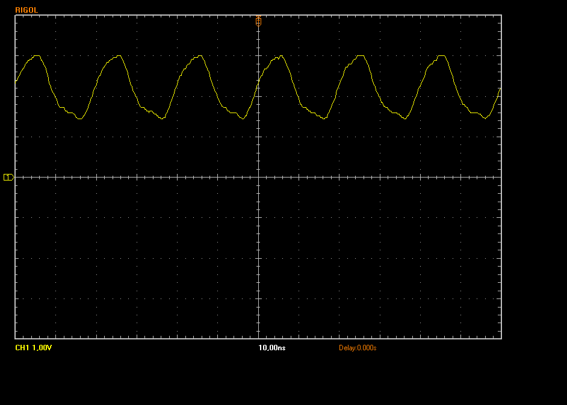 |
| new probe, x10 The voltage here shows quite some overshoot, up to 6V and down to -2V. | 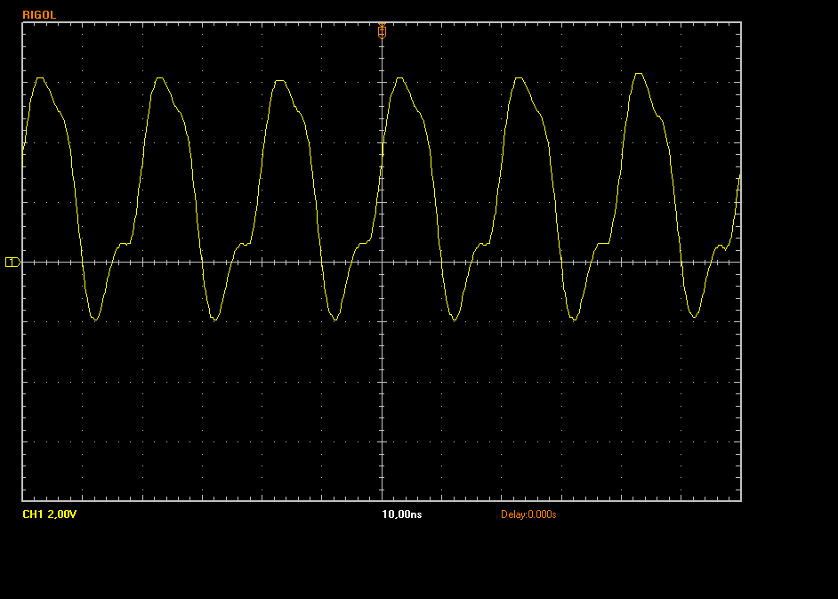 |
| old probe, x10 The old probe only shows slightly higher overshoot, but otherwise looks very similar to the new probe. | 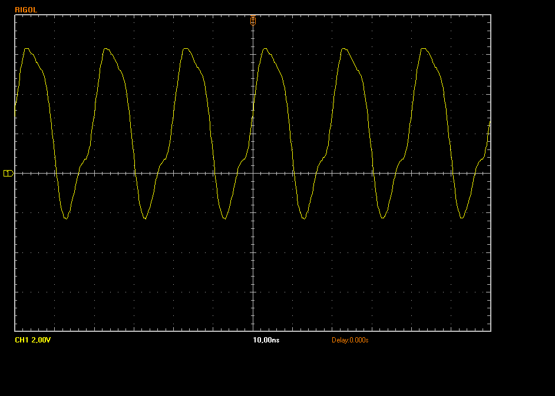 |
| new probe - old scope, x10 As you can see, there only is a DC component - 50 MHz is definitely too high for that 15 MHz scope. | 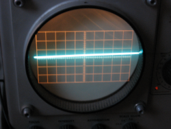 |
{kind=link}
{kind=link}
{kind=link}
{kind=link}
Here I used the 10 MHz CPU clock input, as generated by the CPLD.
| Measuring: | 10 MHz CPU clock input (from CPLD) (click to enlarge) |
|---|---|
| new probe, x10 The voltage here shows less overshoot, down to -1.8V. But the flanks are much higher here, due to the higher bandwidth for the harmonics. The high voltage does not show much overshoot anymore, but also is max'd at about 4V. | 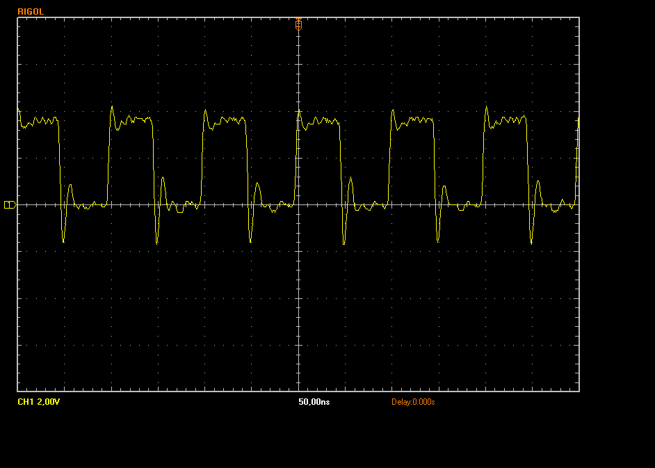 |
| old probe, x10 The old probe again only shows slightly higher overshoot, but otherwise looks very similar to the new probe. | 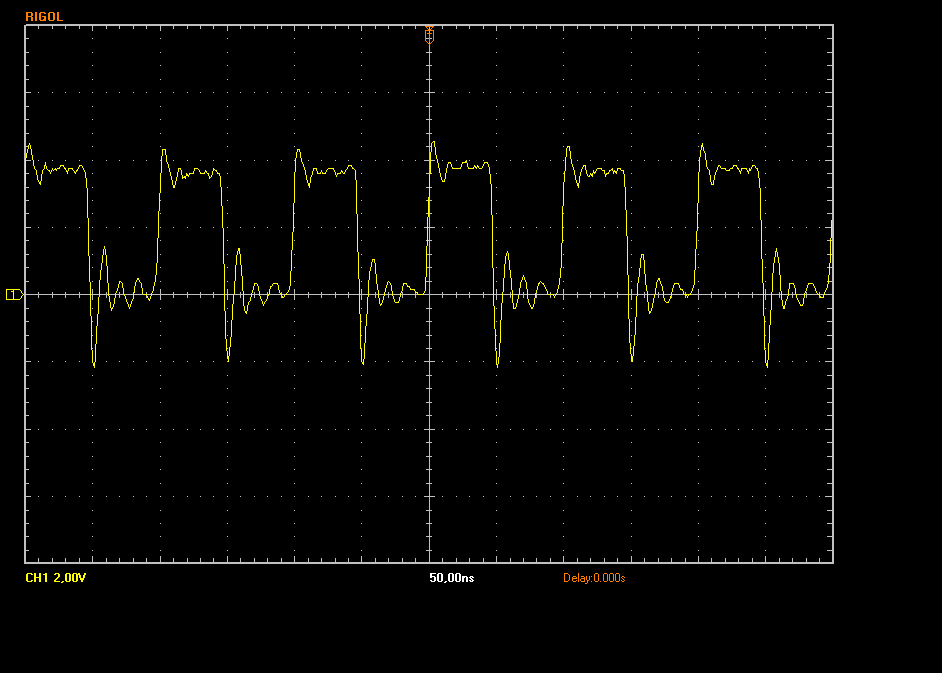 |
{kind=link}
{kind=link}
Here I used the 5 MHz CPU clock input, as generated by the CPLD.
| Measuring: | 5 MHz CPU clock input (from CPLD) (click to enlarge) |
|---|---|
| new probe, x10 Result similar to the 10 MHz case | 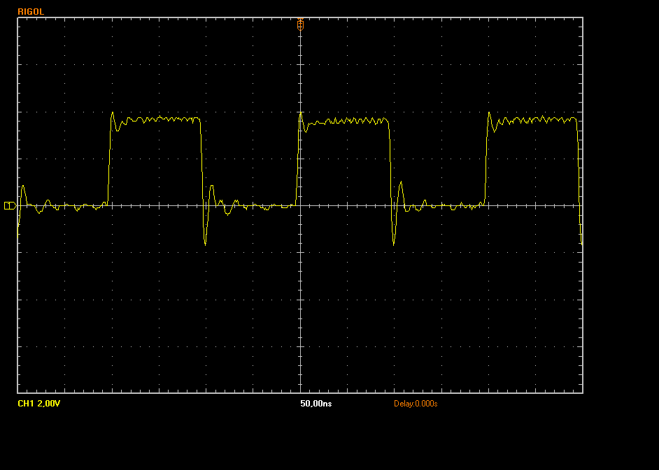 |
| old probe, x10 Again, similar to the 10 MHz case, only slightly more overshoot | |
| old probe, x10, with FFT analysis Unfortunately the PC software only exports this small image | 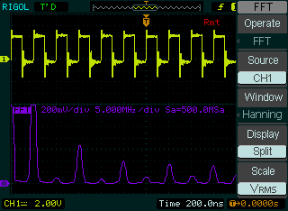 |
| new probe, x1 Not sure what the x1 setting here does. Looks like a clear signal with a distinct bandwidth limit. |  |
| unshielded probe, x1 This is the picture with the unshielded probe and shows a lot of overshooting noise involved. | 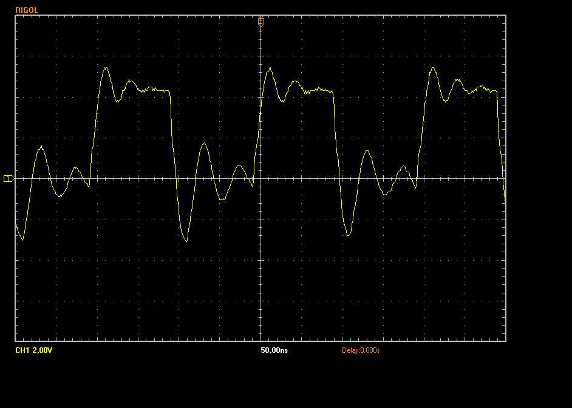 |
| new probe - old scope, x10 10 MHz is actually quite well shown for a 15 MHz scope (I think). Not many details though. | 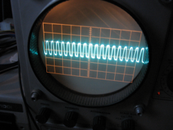 |
{kind=link}
{kind=link}
{kind=link}
{kind=link}
{kind=link}
Here I measured RAM Pin 28, which is A13. This signal is generated by the CPU, here at 5 MHz CPU clock.
| Measuring: | Address signal A13 at 5 MHz CPU clock (from CPU) (click to enlarge) |
|---|---|
| new probe, x10 Shows a clear signal, with only slight overshoot. | 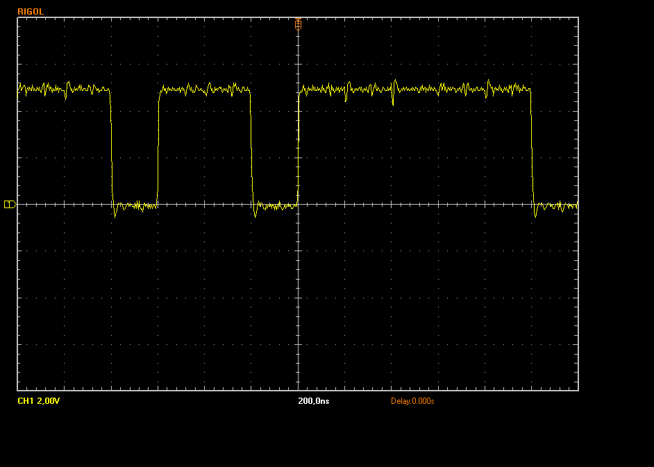 |
| old probe, x10 Only slightly worse. Goes into the negative though. | 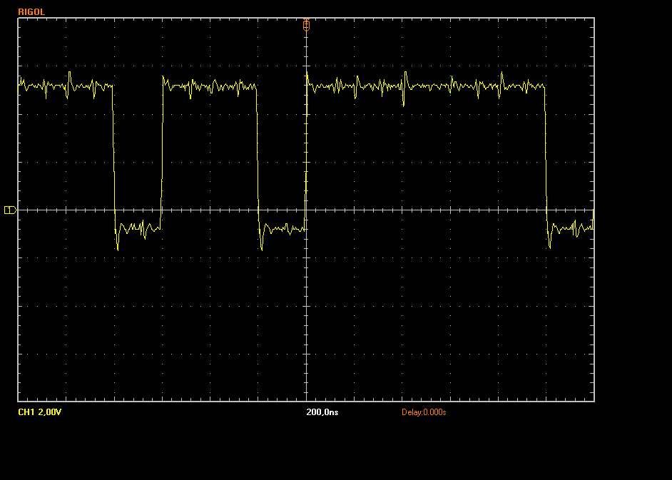 |
| new probe - old scope, x10 Shows a nice smooth signal. | 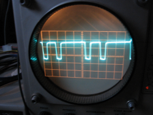 |
{kind=link}
{kind=link}
{kind=link}
In summary I can say that the scope was a good buy. It has lots of features my old scope does not have, and can show a lot higher frequencies.
On the other hand I am still thinking whether I should actually keep the old scope. While the new one is all electronics, with highly integrated FPGAs internally etc - it is basically not servicable anymore. Looking at the age of the old scope, I suspect that it still works when the new breaks...
Return to Homepage
Last modified: 2010-09-10